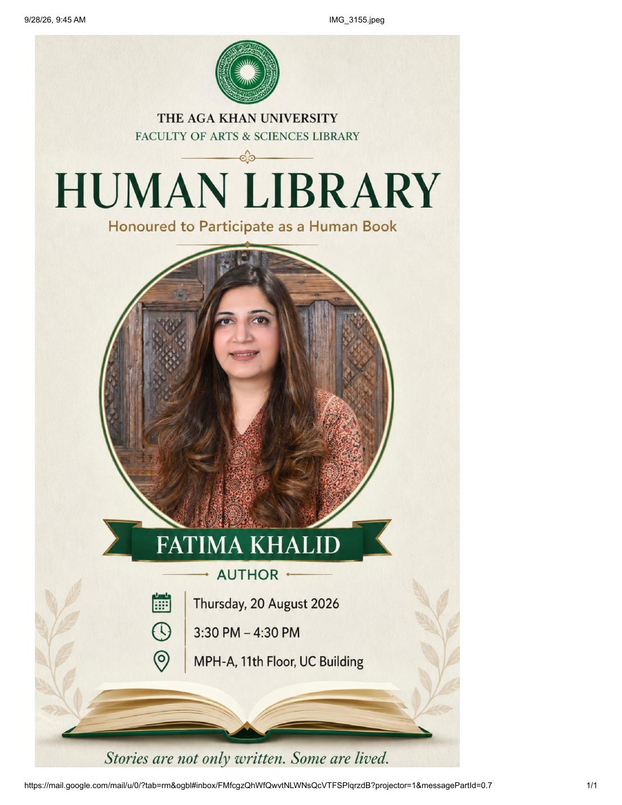
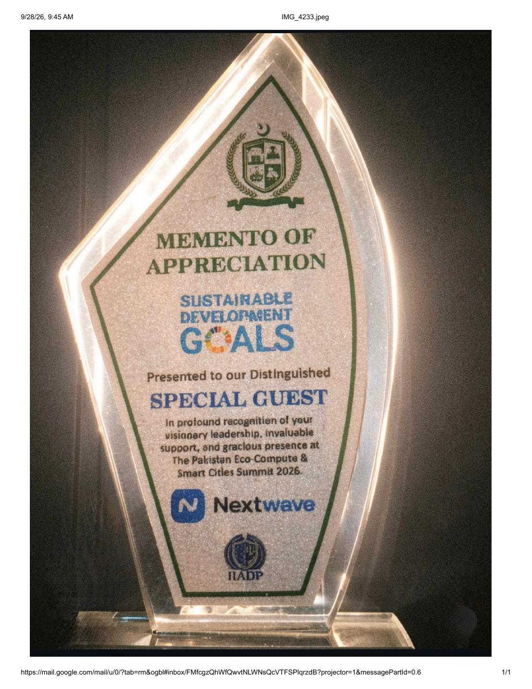
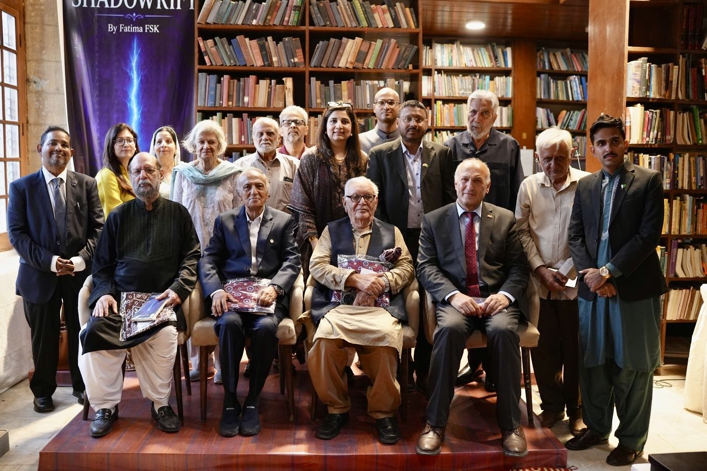
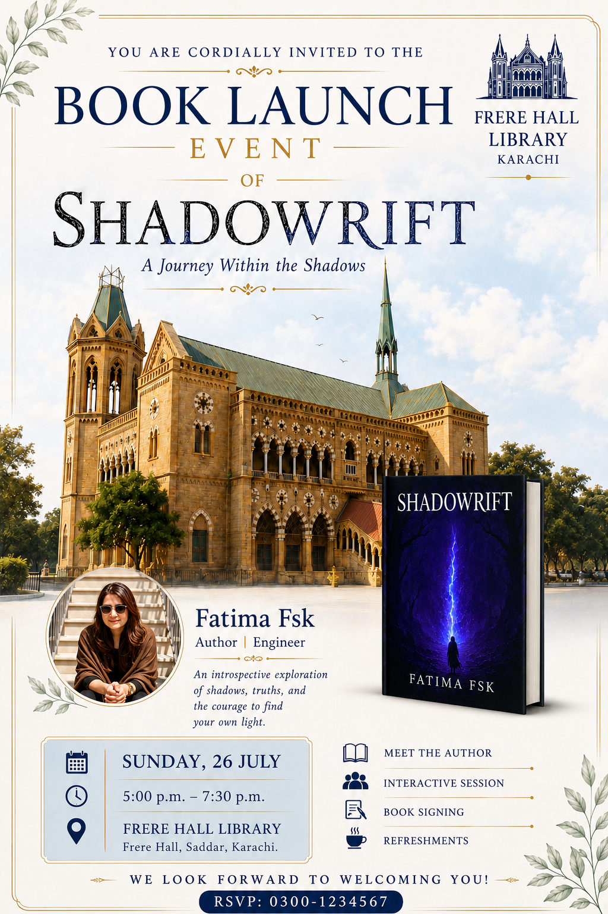
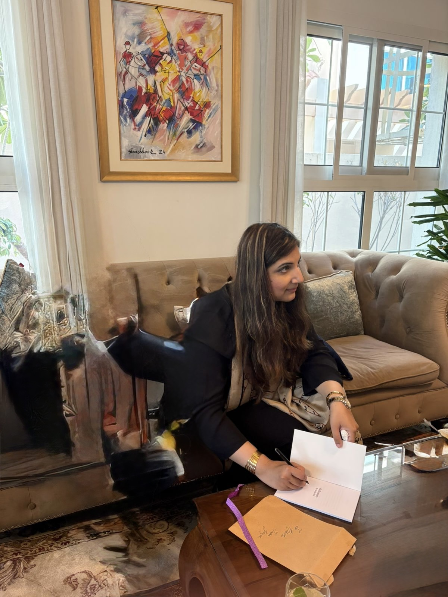
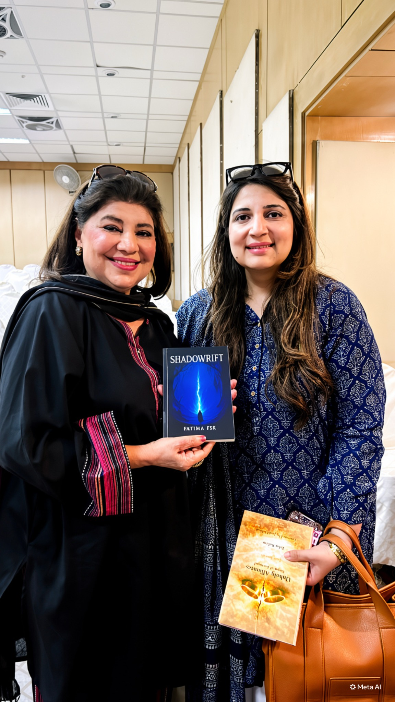
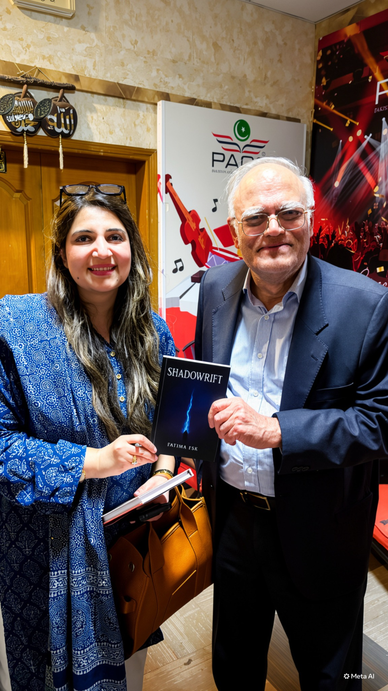
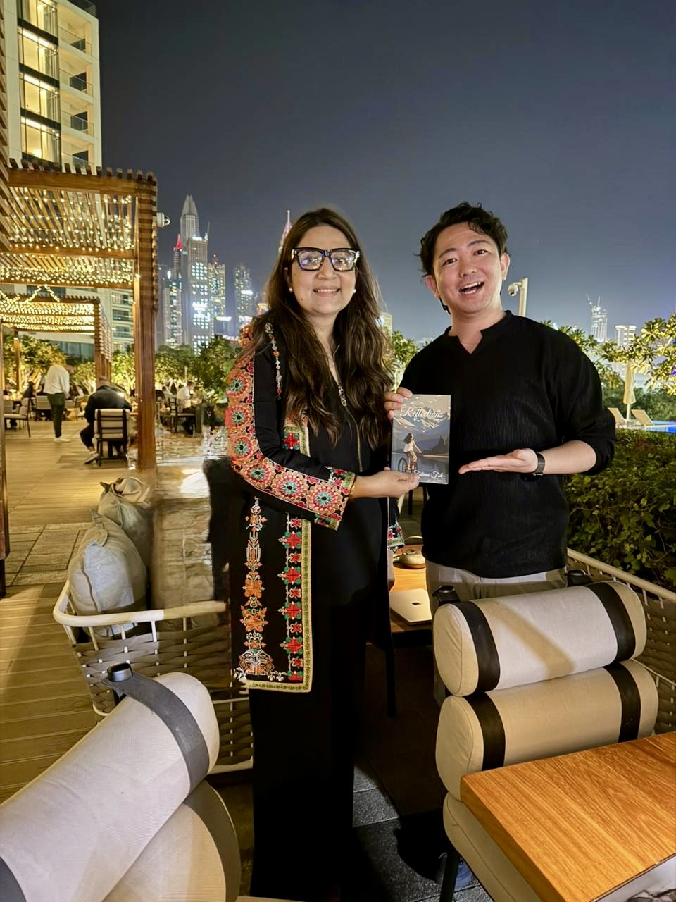
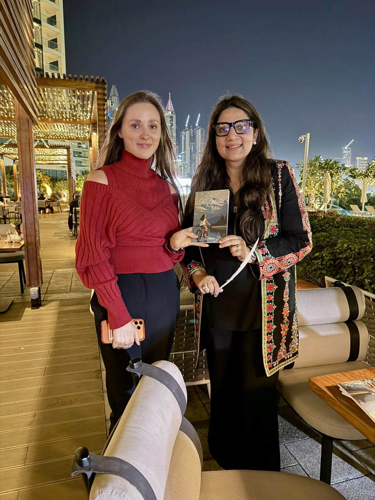

01 / 2025
Reflections
A journey inward — exploring identity, emotional patterns, resilience and the stories we inherit.
Get on Amazon →
A journey inward — exploring identity, emotional patterns, resilience and the stories we inherit.
Get on Amazon →
An exploration of the unseen patterns that shape how we think, live and become.
Get on Amazon →The launch became a wider literary conversation — bringing readers, cultural voices and ideas of self-discovery into the same room.





Selected moments from conversations around Reflections, bringing its themes of identity, nature, family and awareness into lived encounters.



Read the books as two points along the same inquiry: what happens when we become more willing to observe what is happening within us?